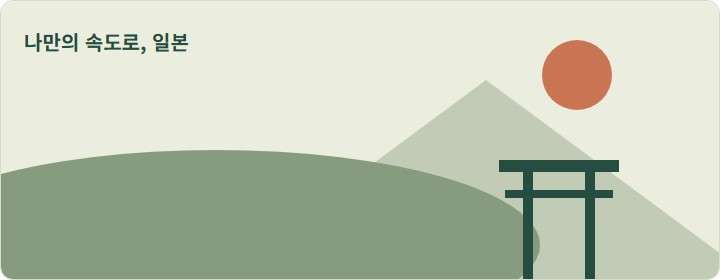

서비스 소개
혼자 하는 일본 여행, 필요한 말부터 시작하기

일본어가 익숙하지 않은 혼자 여행자를 위한 여행 회화 서비스를 준비하고 있습니다.
여행 중 필요한 표현을 찾아보고, 출발 전에는 자주 쓰는 표현을 연습할 수 있도록 구성할 예정입니다.
여행 회화 상황
-
음식점에서 주문하기
혼자 왔어요. 一人です。 (히토리데스)
-
교통 이용하기
역은 어디인가요? 駅はどこですか。 (에키와 도코데스카)
-
숙소 이용하기
예약했습니다. 予約しています。 (요야쿠시테이마스)
나의 여행 회화 준비
화면 테마
0 / 10
이 페이지는 기본 표현을 확인하는 학습용 화면입니다.
안내 확인 후 여행 회화 준비를 시작할 수 있습니다.
여행 회화 준비하기
1 / 3 · 여행 정보 입력
여행 정보 입력
필요한 회화 상황 선택
음식점에서 혼자 왔다고 말하는 표현
준비 내용 확인
여행 회화 준비가 완료되었습니다
여행 전 말하기 연습
뜻을 보고 일본어로 말하기
말한 내용이 정답과 같은지 확인해주세요.
이용 방법
- 여행자 이름을 입력하고 이용 안내를 확인합니다.
- 여행 회화 준비를 시작하고 이름과 출발 날짜를 입력합니다.
- 음식점, 교통, 숙소 중 필요한 상황을 선택합니다.
- 입력한 내용을 확인하고 준비를 완료합니다.
- 완료 화면의 일본어 표현을 소리 내어 읽어봅니다.
학습 소식 받기
이메일을 입력한 뒤 신청해주세요.